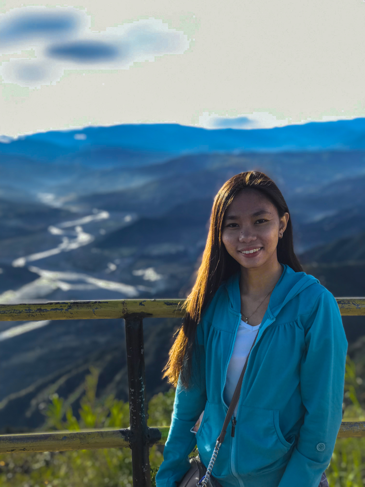

I've developed my life and you
can do the same for you.
I'm Rea V. Robelo 21 years of age, BS Computer Science student at North Luzon Philippines State College. Always believe in a saying that "In the middle of difficulties lies oppurtunities."
By Albert Einstein. Computer Science is never been my choice of specialization, my computer skills is lacking but it's actually my choosen course now. The first time we studied the environment of
computer is definitely the "difficult" times, but the moment I embrace and put my efforts all together it is the time where "oppurtunities lies". As we explore computer science, we get to discover and learn the significance and impact of our choosen career path to the possible future of technologies, wherein it lies on our hands, a COMPUTER SCENCE STUDENTS.